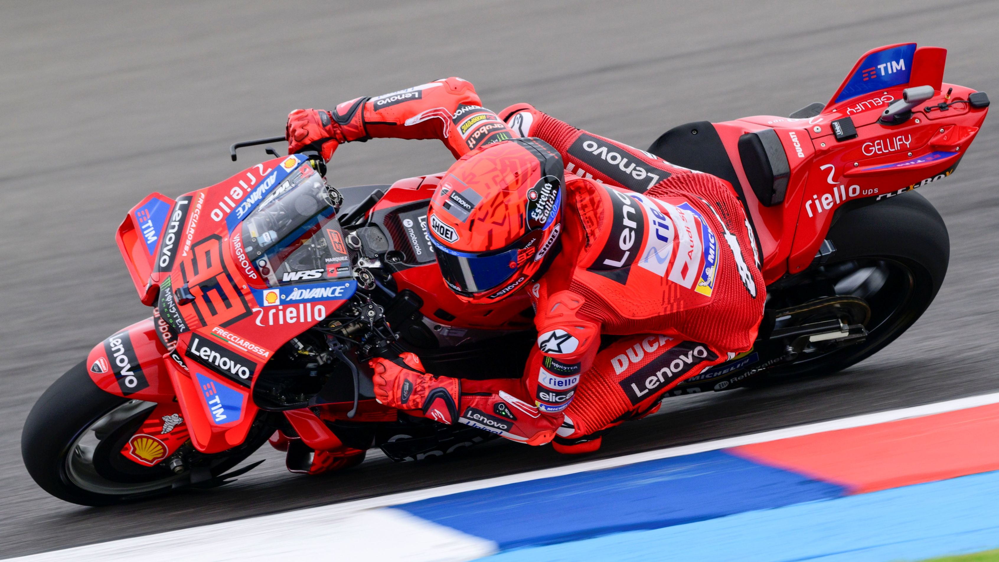

We are 93

Descubre la pasión y el espíritu del motociclismo con nuestra exclusiva colección de productos oficiales de Marc Márquez. Desde camisetas y gorras hasta accesorios únicos, cada artículo está diseñado para capturar la esencia de la velocidad, la precisión y la dedicación que definen al legendario piloto número 93.
Con diseños exclusivos y materiales de alta calidad, nuestra colección refleja la esencia de Márquez: audaz, innovador y siempre listo para la próxima carrera. Ya seas un seguidor de su trayectoria o simplemente busques ropa con un toque deportivo y dinámico, aquí encontrarás lo que necesitas.
¡Prepárate para vivir la emoción de MotoGP con el mejor estilo!
Quien es Marc Marquez

Marc Márquez, conocido como "El Niño de Cervera", es un crack del motociclismo y todo un fenómeno en MotoGP. Nacido el 17 de febrero de 1993 en Cervera, España, este piloto es pura adrenalina. Desde temprana edad mostró talento en el motociclismo, debutando en el Campeonato del Mundo en la categoría de 125cc a los 15 años.
A lo largo de su carrera, ha ganado ocho campeonatos mundiales, consolidándose como una figura dominante en el deporte. Su estilo de conducción agresivo y su capacidad para recuperarse de lesiones han sido clave en su éxito. Actualmente, sigue compitiendo con el objetivo de conquistar más títulos y superar nuevos desafíos. En los últimos años, ha seguido compitiendo al más alto nivel, logrando victorias en carreras sprint y manteniéndose como uno de los pilotos más competitivos. Su regreso triunfal en circuitos como Jerez de la Frontera ha sido un testimonio de su determinación y talento
Nuestros productos
Domina la pista con el monotraje de moto inspirado en el legendario Marc Márquez. Diseñado para ofrecer la máxima protección, comodidad y aerodinámica, este traje es el equilibrio perfecto entre tecnología y pasión por las motos.
Material de Alta Calidad: Fabricado con cuero premium y paneles elásticos estratégicos para un ajuste ergonómico y libertad de movimiento.
Protección Avanzada: Refuerzos en hombros, codos y rodillas con certificación CE, garantizando seguridad en cada curva.
Diseño Exclusivo: Gráficos inspirados en la estética de Marc Márquez, con detalles en rojo y blanco que reflejan su espíritu ganador.
Lleva la esencia de la velocidad y el control a tus pies con los botines de moto inspirados en Marc Márquez. Diseñados para ofrecer máxima seguridad, comodidad y un look inconfundible, estos botines son ideales para pilotos que buscan rendimiento sin sacrificar estilo.
Material Premium: Construcción en cuero sintético resistente y microfibra de alta calidad para mayor durabilidad.
Protección Avanzada :Refuerzos en tobillo y puntera con certificación CE para absorción de impactos.
Diseño Exclusivo: Colores y gráficos inspirados en el legendario Marc Márquez, con un toque agresivo y dinámico.